Multimedia
Nesta página encontra conteúdo multimedia.
Ir para Fotografias | Ir para Vídeo | Ir para Poesia
Fotografias
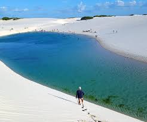
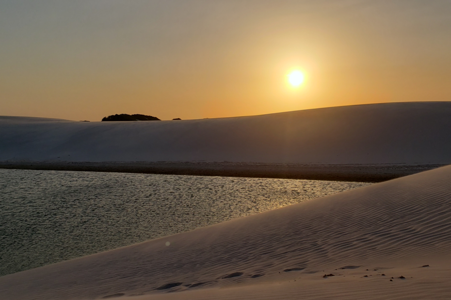
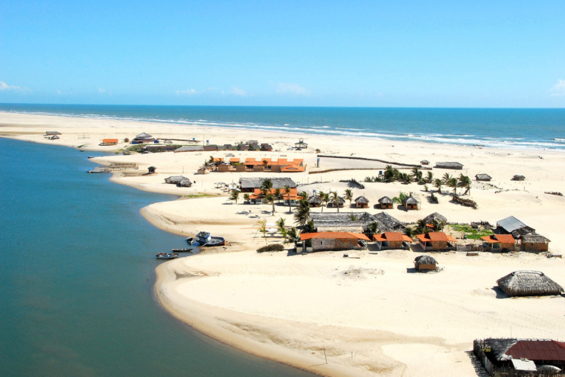
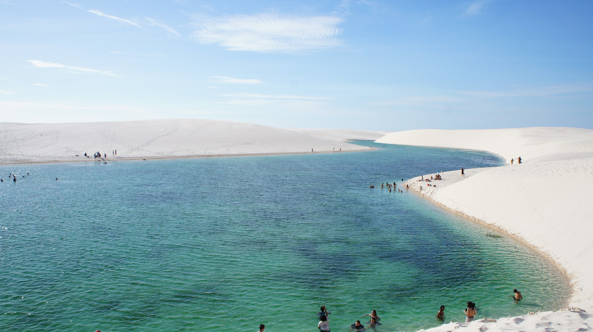
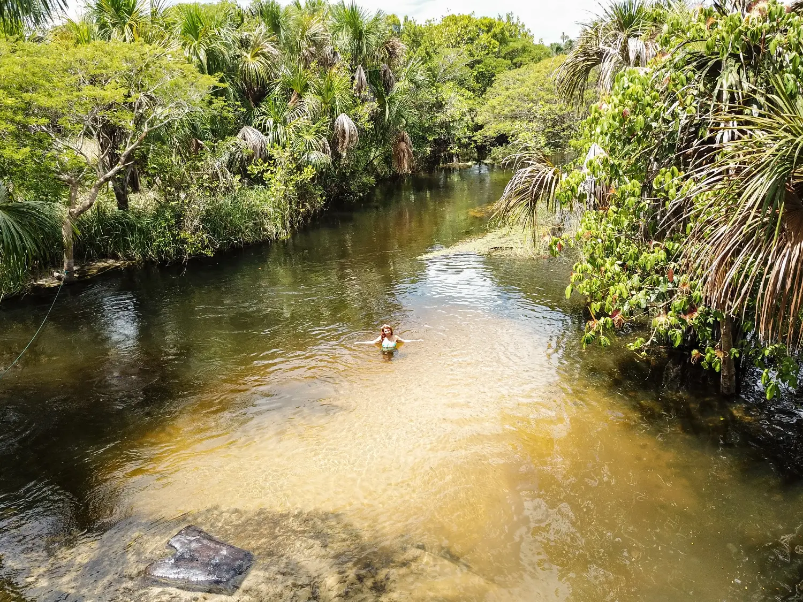
 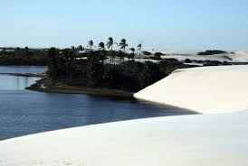
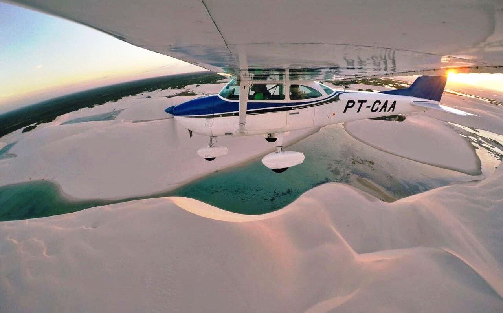
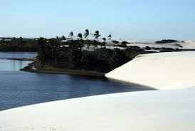
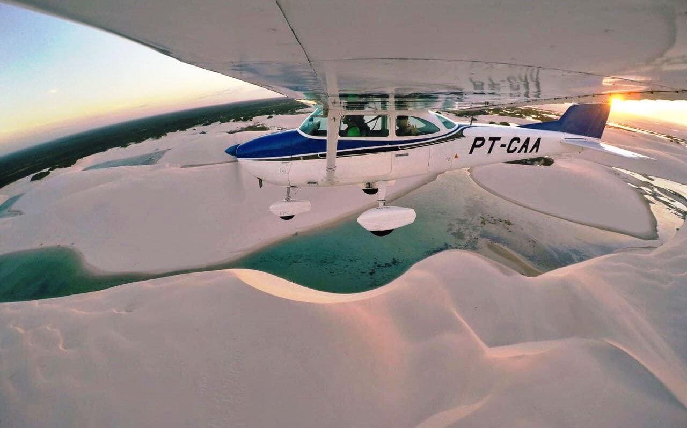
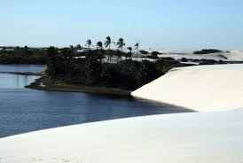
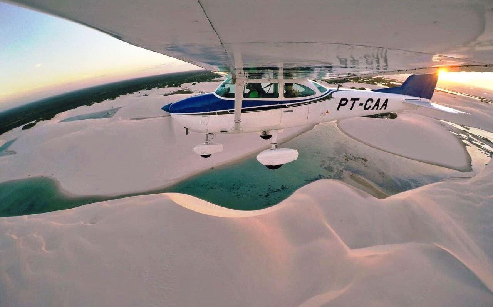
Vídeo
Poesia
No coração do Maranhão resplandece,
um oásis bordado de vento e de sol,
onde o rio Preguiças se aquece
e os Lençóis se estendem, um vasto lençol.
São dunas que dançam em ondas douradas,
carícias do tempo, esculturas do ar,
entre elas, lagoas serenas, guardadas,
espelhos azuis que aprendem a sonhar.
Barreirinhas, entrada de um mundo encantado,
porto de areia, de vida e luar,
seus caminhos de luz, de silêncio sagrado,
fazem da alma um lugar pra ficar.
Oh, Lençóis, poema da natureza,
teu deserto é de vida, não de solidão.
Na brancura imensa repousa a beleza
de um Brasil escondido no chão.